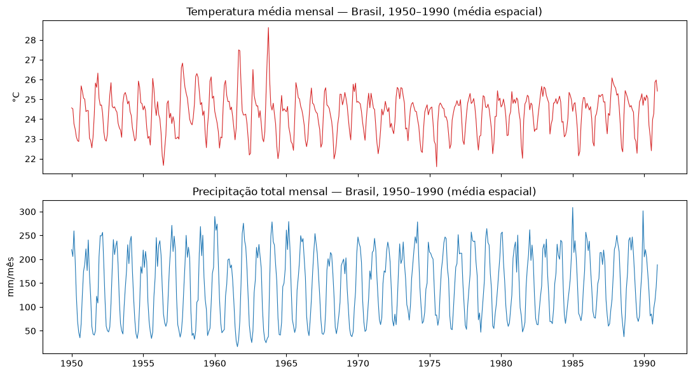
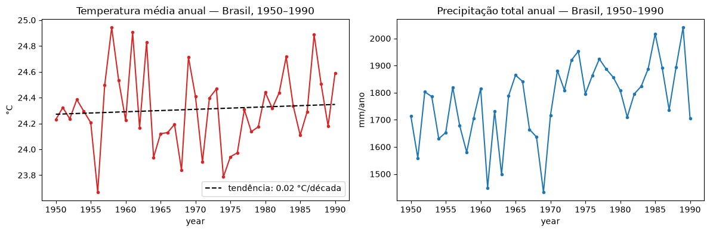
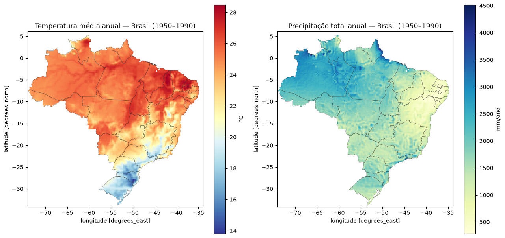
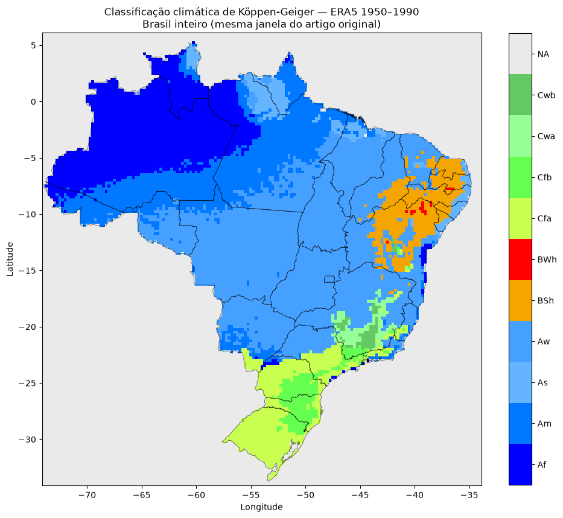
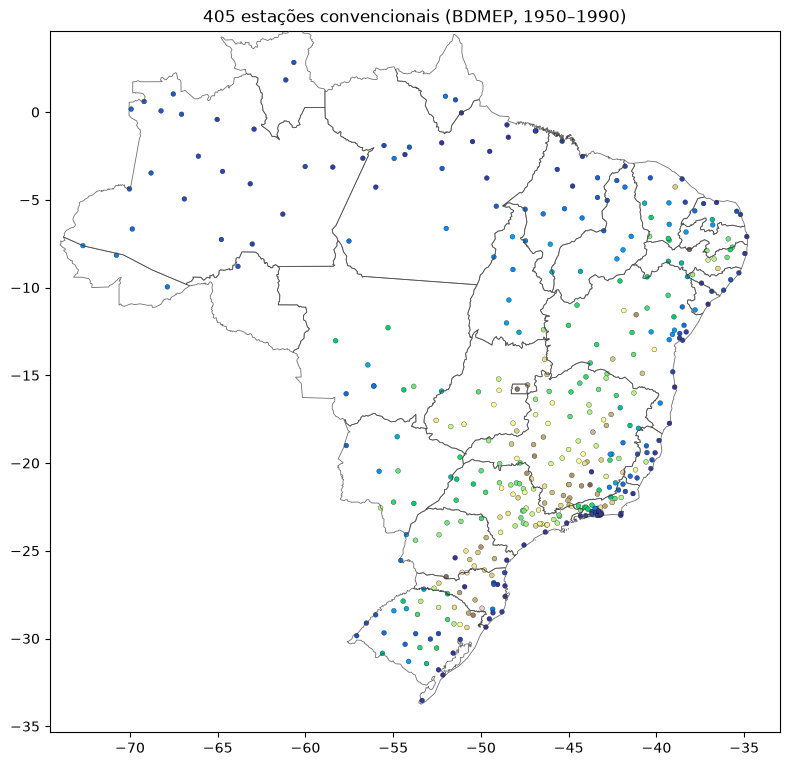
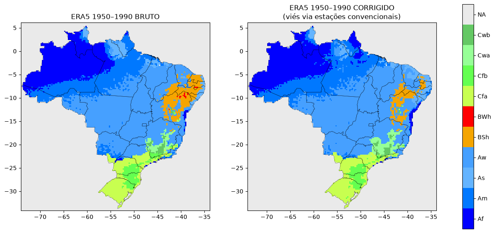
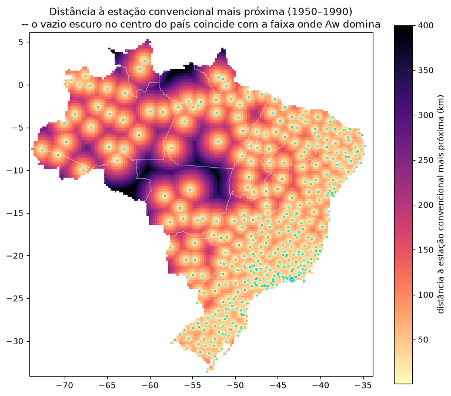

Este documento registra a quarta variante da análise exploratória de classificação climática
de Köppen–Geiger para o Brasil, construída sobre o trabalho anterior
(notebook_brasil.ipynb, ERA5 1996–2025) com um objetivo específico:
isolar a variável "período" da variável "fonte de dado" na comparação com o artigo
original de Alvares et al. (2013).
Os notebooks anteriores (ERA5 1996–2025 e estações automáticas BDMEP ~2000–2025) encontraram a mesma divergência frente ao artigo — zona B (árido/semiárido) maior, zona C (subtropical) menor — em duas fontes de dado independentes. Isso levanta duas hipóteses não excludentes: (1) viés sistemático de fonte de dado moderna, ou (2) mudança climática real entre a linha de base do artigo (1950–1990) e o período atual. Rodar o ERA5 exatamente na janela textual do artigo — "adequate temporal data series (> 25 years between 1950 and 1990)" — permite testar essas hipóteses diretamente: se o resultado bater com o artigo nessa janela, a hipótese (2) ganha força.
Resultado central adiantado: a zona A bate quase perfeitamente com o artigo em todas as quatro fontes testadas (81,4% a 82,4%). A zona B mostra uma progressão temporal quase monotônica — 4,9% (artigo, 1950–1990) → 6,1% (ERA5 na mesma janela) → ~8% (dado moderno, ERA5 e estações) — evidência de que a divergência é predominantemente temporal, não um artefato puro de fonte de dado.
| Produto | reanalysis-era5-single-levels-monthly-means |
| Variáveis | 2m_temperature (2t) e total_precipitation (tp) |
| Área (bbox) | lat 6°/-34°, lon -74°/-34° — Brasil inteiro + margem |
| Resolução | grade regular 0,25° (161×161 pontos) |
| Período | jan/1950 – dez/1990 (41 anos, 984 campos = 2 variáveis × 12 meses × 41 anos) |
Uma particularidade de metadados exigiu tratamento especial: o campo tp é
codificado com o tempo referenciado ao início da previsão (18h do dia anterior + passo de
12h), enquanto 2t usa o tempo de validade direto (00h do dia 1). Isso fazia o
earthkit-data recusar o merge automático das duas variáveis. A correspondência
mês-a-mês entre as duas séries foi verificada como 1:1 antes de realinhar pela coordenada
limpa do 2t — sem alterar nenhum valor de dado, só a coordenada de tempo.
Para testar correção de viés e investigar causas de divergência, foram usadas 646 estações
convencionais do INMET (código numérico de 5 dígitos, padrão OMM — rede histórica,
diferente da rede automática usada no notebook_estacoes.ipynb), baixadas
manualmente do portal BDMEP para o período 1950–1990, mesmas variáveis (temperatura média
mensal, precipitação total mensal). Após filtro de qualidade (≥5 anos de dado válido em
todo mês-calendário, para evitar que uma estação com histórico curto distorça a
climatologia), restaram 405 estações utilizáveis.
2t e tp
(Seção 2.1), carregando cada variável separadamente antes do merge.shapely.contains_xy), igual ao notebook_brasil.ipynb —
necessário porque a bbox do ERA5 inclui partes da Argentina, Bolívia, Paraguai, Peru,
Colômbia, Venezuela e Guianas.ERA5 − estação nos pontos de estação e interpolar
essa superfície de correção sobre toda a grade do Brasil (regression-kriging aplicado
como correção de viés, não como preenchimento de grade vazia — o ERA5 já é completo).
Carregamento separado de 2t e tp, verificação de correspondência
mês-a-mês (ambas monotonicamente crescentes, 492 passos cada), realinhamento da coordenada de
tempo de tp pela de 2t, e só então merge. Conversão de unidades
idêntica aos notebooks anteriores: 2t em Kelvin → Celsius;
tp em m/dia (taxa média diária) × dias do mês × 1000 → mm/mês.
Mesmo procedimento do notebook_brasil.ipynb: teste ponto-em-polígono
(shapely.contains_xy) contra o polígono oficial do IBGE para cada célula da
grade. Resultado: 11.346 de 25.921 células (43,8% da bbox) dentro do território brasileiro,
cobrindo 8.530.545 km² — 0,24% de diferença frente aos 8.510.000 km² oficiais.
Para cada célula e mês-calendário, média dos 41 anos (1950–1990), produzindo os arrays
T_arr/P_arr (12, lat, lon) que alimentam a classificação.
Função koppen_classify copiada, caractere por caractere, dos notebooks
anteriores — nenhuma alteração de lógica. Mesma ordem de prioridade
B→A→E→C/D, mesmos 15 testes sintéticos de verificação (Seção 5).
Para cada mês-calendário: (1) amostra-se o valor bruto do ERA5 no pixel mais próximo
válido (dentro do território) de cada estação convencional — com fallback de busca
em janela de 5 células para as 22 estações litorâneas cujo pixel bruto caía em oceano/fora do
Brasil; (2) calcula-se o erro ERA5 − estação (temperatura: aditivo;
precipitação: em escala log1p, para lidar com a assimetria da distribuição de
chuva); (3) krigagem ordinária (modelo esférico, coordenadas geográficas) desse erro sobre
todos os pontos de grade do Brasil; (4) subtração da superfície de erro interpolada da grade
bruta.
Os mesmos 15 perfis sintéticos (um por tipo climático, incluindo tipos que não ocorrem nos dados reais — Cwc, Csa, Csb, ET, EF, BWh) foram reexecutados para comprovar que o algoritmo é idêntico ao dos notebooks anteriores:
OK esperado=Af obtido=Af Tcold= 27.0 Thot= 27.0 MAP= 2460mm Pdry= 80mm OK esperado=Am obtido=Am Tcold= 27.0 Thot= 27.0 MAP= 2525mm Pdry= 15mm OK esperado=Aw obtido=Aw Tcold= 26.0 Thot= 26.0 MAP= 1708mm Pdry= 1mm OK esperado=As obtido=As Tcold= 26.0 Thot= 26.0 MAP= 1475mm Pdry= 20mm OK esperado=BSh obtido=BSh Tcold= 26.0 Thot= 26.0 MAP= 510mm Pdry= 1mm OK esperado=BWh obtido=BWh Tcold= 28.0 Thot= 28.0 MAP= 27mm Pdry= 0mm OK esperado=Cfa obtido=Cfa Tcold= 13.0 Thot= 24.0 MAP= 1540mm Pdry=110mm OK esperado=Cfb obtido=Cfb Tcold= 13.0 Thot= 20.5 MAP= 1460mm Pdry= 80mm OK esperado=Cwa obtido=Cwa Tcold= 17.5 Thot= 23.5 MAP= 1415mm Pdry= 15mm OK esperado=Cwb obtido=Cwb Tcold= 15.5 Thot= 21.5 MAP= 1424mm Pdry= 10mm OK esperado=Cwc obtido=Cwc Tcold= 4.5 Thot= 11.5 MAP= 1260mm Pdry= 15mm OK esperado=Csa obtido=Csa Tcold= 17.5 Thot= 22.7 MAP= 810mm Pdry= 20mm OK esperado=Csb obtido=Csb Tcold= 17.0 Thot= 21.5 MAP= 810mm Pdry= 20mm OK esperado=ET obtido=ET Tcold= -3.0 Thot= 5.0 MAP= 600mm Pdry= 50mm OK esperado=EF obtido=EF Tcold= -5.0 Thot= -5.0 MAP= 360mm Pdry= 30mm 15/15 casos corretos -- algoritmo idêntico aos outros notebooks




Distribuição percentual (11.346 células classificadas):
| Clima | Nº de células | % |
|---|---|---|
| Aw | 4.829 | 42,6% |
| Af | 2.151 | 19,0% |
| Am | 1.982 | 17,5% |
| Cfa | 794 | 7,0% |
| BSh | 670 | 5,9% |
| As | 369 | 3,3% |
| Cfb | 305 | 2,7% |
| Cwa | 149 | 1,3% |
| Cwb | 80 | 0,7% |
| BWh | 17 | 0,1% |
Comparação agregada por zona entre o artigo e as três fontes de dado modernas já analisadas (ERA5 1996–2025 e estações automáticas, de notebooks anteriores):
| Zona | Artigo (1950–1990) |
ERA5 1950–1990 |
ERA5 1996–2025 |
Estações ~2000–2025 |
|---|---|---|---|---|
| A (tropical) | 81,4% | 82,2% | 82,3% | 82,4% |
| B (árido/semiárido) | 4,9% | 6,1% | 8,2% | 7,9% |
| C (subtropical) | 13,7% | 11,7% | 9,5% | 9,7% |
Progressão temporal da zona B: 4,9% → 6,1% → 8,2%/7,9% conforme a janela temporal avança de 1950–1990 para o presente — o ERA5 rodado exatamente na janela do artigo cai quase precisamente no meio do caminho entre o artigo e o dado moderno, evidência de tendência temporal real (expansão da área semiárida), não apenas viés de fonte de dado.

Diagnóstico mês a mês da correção aplicada (erro médio e desvio-padrão em cada mês):
| Mês | Erro T médio (°C) | Erro T DP (°C) | Correção média na grade (°C) |
|---|---|---|---|
| Jan | -0,03 | 0,88 | 0,00 |
| Fev | -0,11 | 0,86 | -0,08 |
| Mar | -0,15 | 0,87 | -0,12 |
| Abr | -0,09 | 0,88 | -0,09 |
| Mai | 0,11 | 0,91 | 0,10 |
| Jun | 0,32 | 0,98 | 0,40 |
| Jul | 0,37 | 1,06 | 0,51 |
| Ago | 0,39 | 1,11 | 0,63 |
| Set | 0,45 | 1,09 | 0,46 |
| Out | 0,28 | 1,00 | 0,46 |
| Nov | 0,00 | 1,03 | 0,14 |
| Dez | -0,06 | 0,93 | 0,01 |

Soma total de diferenças absolutas frente ao artigo: 36,9 pp (bruto) → 36,0 pp (corrigido) — melhora de menos de 1 ponto percentual. Mas esse número agregado esconde uma mistura real de ganhos e perdas por tipo:
| Tipo | Artigo | ERA5 bruto | Dif. bruta (pp) | ERA5 corrigido | Dif. corrigida (pp) | Resultado |
|---|---|---|---|---|---|---|
| Am | 27,5% | 17,5% | -10,0 | 18,5% | -9,0 | melhorou |
| Aw | 25,8% | 42,6% | +16,8 | 43,2% | +17,4 | piorou |
| Af | 22,6% | 19,0% | -3,6 | 19,0% | -3,6 | sem mudança |
| Cfa | 6,5% | 7,0% | +0,5 | 7,1% | +0,6 | piorou (marginal) |
| As | 5,5% | 3,3% | -2,2 | 3,6% | -1,9 | melhorou |
| BSh | 4,9% | 5,9% | +1,0 | 3,3% | -1,6 | piorou (supercorrigiu) |
| Cfb | 2,6% | 2,7% | +0,1 | 2,4% | -0,2 | piorou (marginal) |
| Cwa | 2,5% | 1,3% | -1,2 | 2,2% | -0,3 | melhorou bastante |
| Cwb | 2,1% | 0,7% | -1,4 | 0,7% | -1,4 | sem mudança |
Avaliação: a correção vale a pena manter como alternativa documentada, não como substituta definitiva do mapa bruto. O ganho mais sólido é em Cwa (-1,2 → -0,3 pp, melhora de 75%), mas Aw (o tipo dominante, principal responsável pela divergência total) e BSh pioraram. Além disso, a correção foi treinada e avaliada nos mesmos pontos de estação (sem separação treino/teste), então a melhora reportada é otimista.
O par Am/Aw sozinho responde por 26,8 dos 36,9 pontos percentuais de divergência total frente ao artigo — e a correção de viés mal tocou nele. Hipótese testada: a rede convencional tem um vazio de cobertura bem em cima da faixa de transição Amazônia-Cerrado, justamente onde essa fronteira mais importa.

| Tipo climático | Distância média à estação (km) | Distância mediana (km) |
|---|---|---|
| Cfb | 34,8 | 33,8 |
| Cwb | 38,0 | 34,4 |
| Cwa | 39,2 | 38,7 |
| Cfa | 45,2 | 41,0 |
| BSh | 58,2 | 53,8 |
| As | 114,5 | 90,6 |
| Aw | 115,3 | 85,0 |
| Af | 131,7 | 119,6 |
| Am | 136,8 | 124,7 |
A proporção de Aw cresce de forma monotônica conforme a célula fica mais isolada de qualquer estação:
| Distância à estação mais próxima | % do território | % Aw |
|---|---|---|
| > 100 km | 42,5% | 41,7% |
| > 150 km | 24,9% | 42,8% |
| > 200 km | 14,1% | 50,2% |
| > 250 km | 8,3% | 59,5% |
Faixa de transição Amazônia-Cerrado (lat -6°/-14°, lon -58°/-48° — norte do MT, sul do PA/TO): distância média à estação de 186 km, 69% maior que a média nacional (110 km). Composição climática ali: 82% Aw / 18% Am. A krigagem do erro nessa região é essencialmente extrapolação de longo alcance, sem sinal local real para corrigir — por isso a correção de viés (Seção 7) não conseguiu mover essa fronteira.
A divergência residual em Cwa/Cwb foi atribuída, em notebooks anteriores, à suavização de relevo do ERA5 em baixa resolução. Testamos uma correção por taxa de lapso (lapse-rate) antes de implementá-la — mesma técnica usada por WorldClim/CHELSA para downscaling de reanálise — e o resultado é negativo.
| Preditor | Aplicável à grade? | Slope T médio (°C/100m) | R² médio (temperatura) | R² médio (precipitação) |
|---|---|---|---|---|
| Altitude real da estação (ponto) | Não | 0,076 | 0,074 | 0,015 |
| Diferença ponto−pixel | Não | 0,205 | 0,132 | 0,009 |
| Altitude média do pixel ERA5 (ETOPO) | Sim | 0,023 | 0,010 | 0,023 |
Conclusão: os preditores com sinal mais forte (R²=0,07–0,13) só existem no ponto da estação — medem o descompasso entre um ponto específico e a média de área de ~28×28 km que o pixel ERA5 representa, não um viés sistemático corrigível em nível de grade (toda célula de saída já é uma média de área). O único preditor de fato aplicável à grade — altitude média do próprio pixel ERA5 — tem R²≈0,01, insuficiente para justificar a implementação. Para precipitação o sinal é ainda mais fraco (R²≈0,01–0,02 em todos os preditores). A correção não foi implementada; a causa da divergência residual em Cwa/Cwb fica como questão em aberto.
O algoritmo passa nos mesmos 15/15 testes sintéticos dos outros notebooks — as ressalvas abaixo são todas sobre os dados de entrada, não sobre a classificação.
[6,-74,-34,-34] vs. [5.25,-73,-33,-34] aproximadamente) — por
isso a comparação entre os dois períodos é agregada (Seção 6.4), não célula a célula.